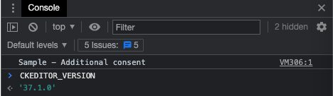

How-tos
The height of the editing area can be controlled with CSS.
/* This selector targets the editable element (excluding comments). */
.ck-editor__editable_inline:not(.ck-comment__input *) {
height: 300px;
overflow-y: auto;
}The rule above only affects the WYSIWYG editing area. When the user switches to the Source code editing mode, the editable element is hidden and replaced with a <textarea> inside a .ck-source-editing-area wrapper. The selector no longer matches, so the editor grows with the source of the document instead of keeping its height. To use the same height in both modes, style the source editing area as well:
/* This selector targets the source editing area. */
.ck-editor__main .ck-source-editing-area {
height: 300px;
}
/* The textarea does not scroll on its own, so turn scrolling on explicitly. */
.ck-editor__main .ck-source-editing-area textarea {
overflow-y: auto;
}Set the height on the .ck-source-editing-area wrapper rather than on the <textarea> it contains. The wrapper grows together with the source of the document, so limiting the height of the <textarea> alone leaves a large empty space below it.
Keep the .ck-editor__main part in both selectors. It makes the rules specific enough to override the default editor styles, no matter in which order the stylesheets are loaded. It also keeps the height out of the fullscreen mode, which moves the editing area out of .ck-editor__main and sizes it on its own. A fixed height there would cut off the side panels, such as comments or AI Chat.
This does not apply to the premium Enhanced source code editing feature, which opens the source of the document in a dialog with its own height.
If you have a reference to the editor instance, use the change() method of the view and set the new attribute via the view downcast writer:
editor.editing.view.change( writer => {
const viewEditableRoot = editor.editing.view.document.getRoot();
writer.setAttribute( 'myAttribute', 'value', viewEditableRoot );
} );If you do not have the reference to the editor instance, but you have access to the editable element in the DOM, you can access it using the ckeditorInstance property and then use the same API to set the attribute:
const domEditableElement = document.querySelector( '.ck-editor__editable_inline' );
const editorInstance = domEditableElement.ckeditorInstance;
editorInstance.editing.view.change( writer => {
// Map the editable element in the DOM to the editable element in the editor's view.
const viewEditableRoot =
editorInstance.editing.view.domConverter.mapDomToView(
domEditableElement
);
writer.setAttribute( 'myAttribute', 'value', viewEditableRoot );
} );To check your editor version, open the JavaScript console available in the browser’s developer tools. This is usually done through the browser’s menu or by right-clicking anywhere on the page and choosing the Inspect option from the dropdown.
Enter the CKEDITOR_VERSION command to check the currently used CKEditor 5 version.

In a simple plugin, you can get the editor’s instance using a plugin functions’ attribute
function MyPlugin(editor) {
// Interact with the API.
// ...
}
ClassicEditor
.create( {
plugins: [
MyPlugin,
// Other plugins.
// ...
]
} )
.then( /* ... */ )
.catch( /* ... */ );If you have a reference to the editor editable DOM element (the one with the .ck-editor__editable class and the contenteditable attribute), you can access the editor instance this editable element belongs to using the ckeditorInstance property:
<!-- The editable element in the editor's DOM structure. -->
<div class="... ck-editor__editable ..." contenteditable="true">
<!-- Editable content. -->
</div>// A reference to the editor editable element in the DOM.
const domEditableElement = document.querySelector( '.ck-editor__editable_inline' );
// Get the editor instance from the editable element.
const editorInstance = domEditableElement.ckeditorInstance;
// Use the editor instance API.
editorInstance.setData( '<p>Hello world!<p>' );By default, CKEditor 5 has no global registry of editor instances. But if necessary, such a feature can be easily implemented, as explained in this Stack Overflow answer.
Because CKEditor 5 uses a custom data model, whenever you want to insert anything, you should modify the model first, which is then converted back to the view where the users input their content (called “editable”). In CKEditor 5, HTML is just one of many possible output formats. You can learn more about the ways of changing the model in the dedicated guide.
For example, to insert a new link at the current position, use the following snippet:
editor.model.change( writer => {
const insertPosition = editor.model.document.selection.getFirstPosition();
const myLink = writer.createText(
'CKEditor 5 rocks!',
{ linkHref: 'https://ckeditor.com/' }
);
editor.model.insertContent( myLink, insertPosition )
} );And to insert some plain text, you can use a slightly shorter one:
editor.model.change( writer => {
const insertPosition = editor.model.document.selection.getFirstPosition();
editor.model.insertContent( writer.createText( 'Plain text' ), insertPosition );
} );You may have noticed that a link is represented as a text with an attribute in the editor model. See the API of the model writer to learn about other useful methods that can help you modify the editor model. model.insertContent will ensure that the content can be inserted to the selected place according to the schema.
To insert some longer HTML code, you can parse it to the model fragment first and then insert it into the editor model:
const content =
'<p>A paragraph with <a href="https://ckeditor.com">some link</a>.</p>';
const viewFragment = editor.data.processor.toView( content );
const modelFragment = editor.data.toModel( viewFragment );
editor.model.insertContent( modelFragment );Remember, if some element or attribute does not have declared converters (whether by the dedicated feature or General HTML support) plugin then those will not get inserted.
// Focus the editor.
editor.focus();const selectedBlocks = Array.from(
editor.model.document.selection.getSelectedBlocks()
);
const firstBlock = selectedBlocks[ 0 ];
const lastBlock = selectedBlocks[ selectedBlocks.length - 1 ];
editor.model.change( writer => {
const range = writer.createRange(
writer.createPositionAt( firstBlock, 0 ),
writer.createPositionAt( lastBlock, 'end' )
);
const selection = writer.createSelection( range )
editor.model.deleteContent( selection );
} );editor.model.change( writer => {
const range = writer.createRangeIn( editor.model.document.getRoot() );
const itemsToRemove = [];
for ( const value of range.getWalker() ) {
if ( value.item.is( 'element', 'imageBlock' ) ) {
// A different `is` usage.
itemsToRemove.push( value.item );
}
}
for ( const item of itemsToRemove ) {
writer.remove( item ); // Remove all the items.
}
} );// Place it at the beginning.
editor.model.change( writer => {
writer.setSelection(
writer.createPositionAt( editor.model.document.getRoot(), 0 )
);
} );
// Place it at the end.
editor.model.change( writer => {
writer.setSelection(
writer.createPositionAt( editor.model.document.getRoot(), 'end' )
);
} );In the example below, we try to find all links, and store the unique ones.
const range = editor.model.createRangeIn( editor.model.document.getRoot() );
const links = new Set();
for ( const value of range.getWalker() ) {
// Link is an attribute on a Text element.
if ( value.type === 'text' && value.item.hasAttribute( 'linkHref' ) ) {
// Set will store only unique links, preventing duplication.
links.add( value.item.getAttribute( 'linkHref' ) );
}
}If you need to search a text fragment and remap it to its model position, use the following example. It will find all words available in the document root, create a model range based on these and feed them into the console.
const model = editor.model;
const rootElement = model.document.getRoot();
const rootRange = model.createRangeIn( rootElement );
const wordRanges = [];
for ( const item of rootRange.getItems() ) {
// Find `$block` elements (those accept text).
if ( item.is( 'element' ) && model.schema.checkChild( item, '$text' ) ) {
// Get the whole text from block.
// Inline elements (like softBreak or imageInline) are replaced
// with a single whitespace to keep the position offset correct.
const blockText = Array.from( item.getChildren() )
.reduce( ( rangeText, item ) => rangeText + ( item.is( '$text' ) ? item.data : ' ' ), '' );
// Find all words.
for ( const match of blockText.matchAll( /\b\S+\b/g ) ) {
// The position in a text node is always parented by the block element.
const startPosition = model.createPositionAt( item, match.index );
const endPosition = model.createPositionAt( item, match.index + match[ 0 ].length );
wordRanges.push( model.createRange( startPosition, endPosition ) );
}
}
}
// Example usage of the collected words:
for ( const range of wordRanges ) {
const fragment = model.getSelectedContent( model.createSelection( range ) );
const html = editor.data.stringify( fragment );
console.log( `[${ range.start.path }] - [${ range.end.path }]`, html );
}// Add observer for double-click and extend a generic DomEventObserver class by a native DOM dblclick event:
import { DomEventObserver } from 'ckeditor5';
class DoubleClickObserver extends DomEventObserver {
constructor( view ) {
super( view );
this.domEventType = 'dblclick';
}
onDomEvent( domEvent ) {
this.fire( domEvent.type, domEvent );
}
}
// Then use in the editor:
const view = editor.editing.view;
const viewDocument = view.document;
view.addObserver( DoubleClickObserver );
editor.listenTo(
viewDocument,
'dblclick',
( evt, data ) => {
console.log( 'clicked' );
// Fire your custom actions here.
},
{ context: 'a' }
);There are many observers provided with our features, and you should check if there is no conflicting observer that already fires for the given DOM event.
import { Plugin, toWidget, toWidgetEditable } from 'ckeditor5'
class Forms extends Plugin {
init() {
const editor = this.editor;
const schema = editor.model.schema;
schema.register( 'forms', {
inheritAllFrom: '$inlineObject',
allowAttributes: 'type'
} );
schema.register( 'formName', {
allowIn: 'forms',
allowChildren: '$text',
isLimit: true
} );
// Disallow all attributes on $text inside `formName` (there won't be any bold/italic etc. inside).
schema.addAttributeCheck( context => {
if ( context.endsWith( 'formName $text' ) ) {
return false;
}
} );
// Allow only text nodes inside `formName` (without any elements that could be down-casted to HTML elements).
schema.addChildCheck( ( context, childDefinition ) => {
if (
context.endsWith( 'formName' ) &&
childDefinition.name !== '$text'
) {
return false;
}
} );
// Data upcast. Convert a single element loaded by the editor to a structure of model elements.
editor.conversion.for( 'upcast' ).elementToElement( {
view: {
name: 'input',
attributes: [ 'type', 'name' ]
},
model: ( viewElement, { writer } ) => {
const modelElement = writer.createElement( 'forms', {
type: viewElement.getAttribute( 'type' )
} );
const nameModelElement = writer.createElement( 'formName' );
// Build model structure out of a single view element.
writer.insert( nameModelElement, modelElement, 0 );
writer.insertText(
viewElement.getAttribute( 'name' ),
nameModelElement,
0
);
return modelElement;
}
} );
// Editing downcast. Convert model elements separately to widget and to widget-editable nested inside.
editor.conversion
.for( 'editingDowncast' )
.elementToElement( {
model: 'forms',
view: ( modelElement, { writer } ) => {
const viewElement = writer.createContainerElement( 'span', {
'data-type': modelElement.getAttribute( 'type' ),
style: 'display: inline-block'
} );
return toWidget( viewElement, writer );
}
} )
.elementToElement( {
model: 'formName',
view: ( modelElement, { writer } ) => {
const viewElement = writer.createEditableElement( 'span' );
return toWidgetEditable( viewElement, writer );
}
} );
// Data downcast. Convert the outermost model element and all its content into a single view element.
editor.conversion.for( 'dataDowncast' ).elementToElement( {
model: 'forms',
view: ( modelElement, { writer, consumable } ) => {
let nameModelElement;
// Find the `formName` model element and consume everything inside the model element range,
// so it won't get converted by any other downcast converters.
for ( const { item } of editor.model.createRangeIn( modelElement ) ) {
if ( item.is( 'element', 'formName' ) ) {
nameModelElement = modelElement.getChild( 0 );
}
consumable.consume( item, 'insert' );
}
return writer.createContainerElement( 'input', {
type: modelElement.getAttribute( 'type' ),
name: nameModelElement.getChild( 0 ).data
} );
}
} );
}
}import { ButtonView, Plugin, LinkUI } from 'ckeditor5';
class InternalLink extends Plugin {
init() {
const editor = this.editor;
const linkUI = editor.plugins.get( LinkUI );
const contextualBalloonPlugin = editor.plugins.get( 'ContextualBalloon' );
this.listenTo( contextualBalloonPlugin, 'change:visibleView', ( evt, name, visibleView ) => {
if ( visibleView === linkUI.formView ) {
// Detach the listener.
this.stopListening( contextualBalloonPlugin, 'change:visibleView' );
this.linkFormView = linkUI.formView;
this.button = this._createButton();
console.log( 'The link form view has been displayed', this.linkFormView );
// Render the button template.
this.button.render();
// Register the button under the link form view, it will handle its destruction.
this.linkFormView.registerChild( this.button );
// Inject the element into DOM.
this.linkFormView.element.insertBefore( this.button.element, this.linkFormView.saveButtonView.element );
}
} );
}
_createButton() {
const editor = this.editor;
const button = new ButtonView( this.locale );
const linkCommand = editor.commands.get( 'link' );
button.set( {
label: 'Internal link',
withText: true,
tooltip: true
} );
// This button should be also disabled when the link command is disabled.
// Try setting editor.isReadOnly = true to see it in action.
button.bind( 'isEnabled' ).to( linkCommand );
button.on( 'execute', () => {
// Do something (for emaple, open the popup), then update the link URL field's value.
// The line below will be executed inside some callback.
this.linkFormView.urlInputView.value = 'http://some.internal.link';
} );
return button;
}
}When building the React application for the production using the npm run build command, there is a faint chance it may produce an error related to the memory available on the build machine:
<--- Last few GCs --->
[32550:0x110008000] 42721 ms: Scavenge (reduce) 4061.0 (4069.6) -> 4060.5 (4070.8) MB, 4.3 / 0.0 ms (average mu = 0.358, current mu = 0.374) allocation failure
[32550:0x110008000] 42726 ms: Scavenge (reduce) 4061.2 (4069.8) -> 4060.6 (4071.3) MB, 4.0 / 0.0 ms (average mu = 0.358, current mu = 0.374) allocation failure
[32550:0x110008000] 42730 ms: Scavenge (reduce) 4061.4 (4073.3) -> 4060.9 (4073.3) MB, 3.7 / 0.0 ms (average mu = 0.358, current mu = 0.374) allocation failure
<--- JS stacktrace --->
FATAL ERROR: Ineffective mark-compacts near heap limit Allocation failed - JavaScript heap out of memory
1: 0x1012e4da5 node::Abort() (.cold.1) [/usr/local/bin/node]
This issue has not been fixed yet, however, there is a workaround for this. Increasing the available memory for Node.js using the --max_old_space_size modifier should resolve the problem.
node --max_old_space_size=4096 node_modules/.bin/react-scripts buildThe memory limit can be set globally as well:
# Save it in the `.bash_profile` file to avoid typing it after rebooting the machine.
export NODE_OPTIONS="--max-old-space-size=4096"
npm run buildIt can also be set on-demand, per command call:
NODE_OPTIONS="--max-old-space-size=4096" npm run build